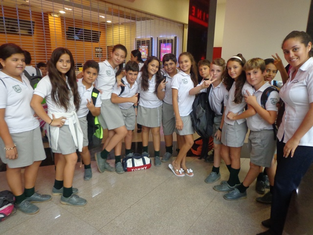
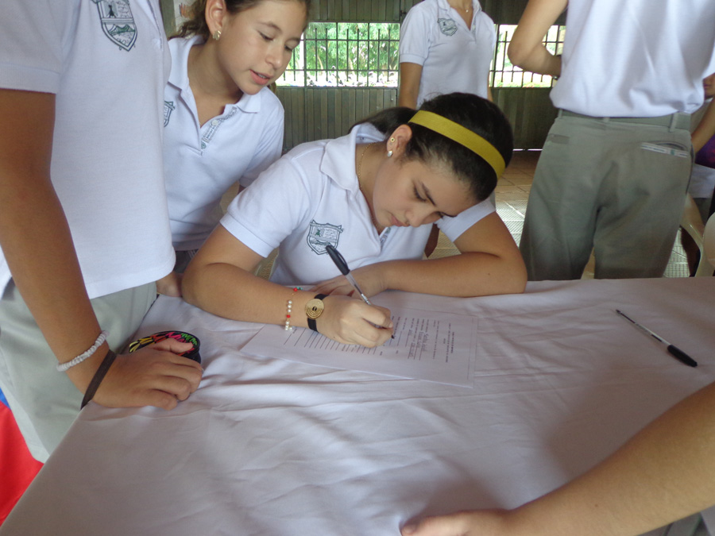

Colegio Britanico de Monteria
"Enseñar es aprender dos veces". Joseph Joubert.

Colegio Britanic de Monteria
Ya se inscribieron los candidatos al Consejo Escolar

Con el fin de promover una democracia fundamentada en la equidad, el respeto, tolerancia y demás valores, e inculcar en nuestros estudiantes los principios democráticos que buscan formar ciudadanos responsables y sensibles frente a su ambiente escolar y social, se realizan cada año en el Colegio Británico de Montería las elecciones para conformar el Consejo